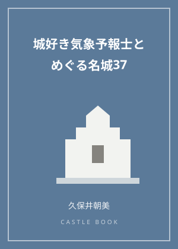
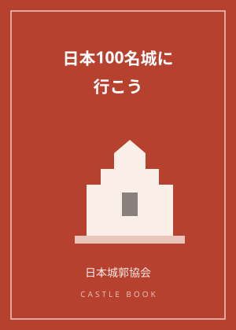

国宝5城を比べてみる｜松本城を軸に五つの天守の個性
現存12天守のうち、天守が国宝に指定されているのは5城だけです。姫路城・松本城・犬山城・彦根城・松江城。それぞれの個性を比べてみると、名前と特徴が自然に結びついて覚えられます。
白と黒の対比
白漆喰の姫路城と、黒漆塗りの松本城は、よく対で語られます。松本城の天守は戦国時代末期に建てられ、石落としや狭間など戦うための仕掛けを残します。一方で、江戸時代に入ってから増築された月見櫓は、戦いのためではない優雅な造りで、時代の変化をひとつの天守の中に見ることができます。
水辺の犬山城と、井伊家の彦根城
犬山城は木曽川に面した断崖の上に立ち、その天守は現存最古とされることがあります（諸説あります）。彦根城は井伊家の居城で、琵琶湖に近い丘陵に築かれた平山城です。天秤櫓など、ほかの城から移築されたと伝わる建物も見どころです。
最も新しい国宝、松江城
松江城の天守は2015年に国宝に指定されました。柱に打ち付けられていた祈祷札から、築城の年代が裏付けられたことが評価の一因とされています。しゃちほこの大きさでも知られる、どっしりとした姿の天守です。
検定の学習ポイント
国宝5城の顔ぶれは、教科書第4章の最頻出ポイントです。「白い姫路・黒い松本・水辺の犬山・井伊の彦根・新しい国宝の松江」というように、特徴とセットで整理しておくと確実です。
5城すべてを巡る旅は、それ自体が立派な目標になります。まずは近い1城から、比べてみる楽しさを味わってください。
この記事のおすすめ本

表紙イメージ（実際の表紙とは異なります）
PR 読み物
城好き気象予報士とめぐる名城37 天気が変えた戦国・近世の城
著者：久保井朝美
気象予報士の視点で37の名城をめぐる一冊。天気や気候が築城や戦にどう影響したかという切り口が新鮮で、城を見る目が変わります。
Amazonで見る価格はAmazonでご確認ください／リンク先：Amazon.co.jp

表紙イメージ（実際の表紙とは異なります）
PR ガイド・スタンプ帳
日本100名城に行こう 公式スタンプ帳つき
著者：公益財団法人 日本城郭協会
日本100名城の公式ガイドブック。1城1ページで見どころを解説し、巻末がそのまま公式スタンプ帳になります。スタンプラリーを始めるならまずこの一冊。
Amazonで見る価格はAmazonでご確認ください／リンク先：Amazon.co.jp
当サイトは、Amazon.co.jpを宣伝しリンクすることによってサイトが紹介料を獲得できる手段を提供することを目的に設定されたアフィリエイトプログラムである、Amazonアソシエイト・プログラムの参加者です。価格・在庫はリンク先でご確認ください。